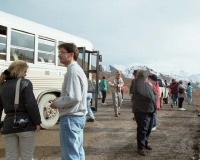
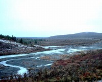
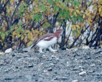
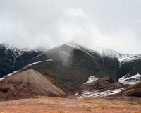
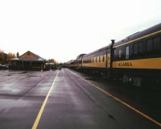
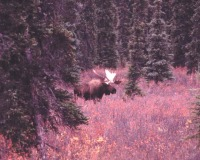

 |
パーク内は一般車乗り入れ禁止なので、シャトルバスかツアーに参加することになります。 |
|
手付かずの大自然が広がっています。 |
 |
 |
9月だというのにとても寒く、雪も降っています。名も知れない鳥の足も毛に覆われていました。 |
| 植村直巳が遭難した、マッキンリーを望む。 |  |
 |
一度は乗ってみたいアラスカ鉄道。列車が来たときのみ栄える駅。 |
| ムースが居ました。 |  |
無茶苦茶大自然です。9月だというのに雪が降ります。寒いです。防寒はしっかりと。
自分はユースホステルに泊まったので予約していませんが、ちゃんと泊まりたいなら予約する方が良いです。公園内にロッジが１軒と周辺にモーテルがあります。ここで泊まれない場合、近くに街はありません。
Written : 2004.04.07